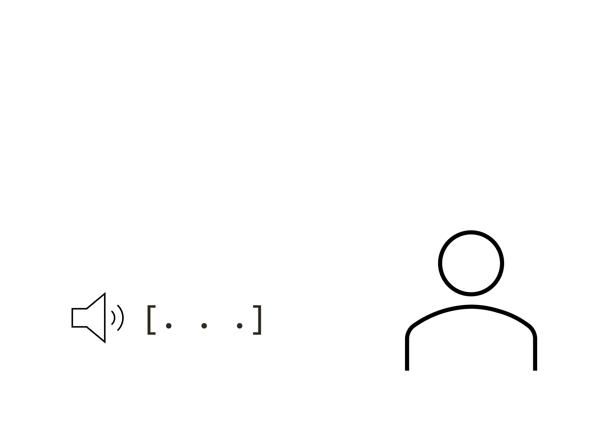

Katrina Connell, Ph.D.
Lab Manager and Research Coordinator
The Department of Spanish, Italian, and Portuguese
The Pennsylvania State University
"All our dreams come true, if we have the courage to pursue them" - Walt Disney
Hello! My Name is Katrina. I am ____ from South Jersey, USA. I am an experimenatl linguist, an eye-tracking researcher, and a lab manager. In my own work I study how second langauge learners aquire suprasegmenatl features of speech that are used to recognise words in spoken speech, such as lexical tones. Currently, I work for The Penn State Univeristy where I manage a linguistics research lab where we use eye-tracking, EEG, and behavioral methods to study seconald langaueg acquisiiton and bilingualism.
Hover on the tabs below to get a quick look at who I am, or click to see more on that topic!
My intense commitment and devotion for teaching extends outside the confines of the classroom. I have been the primary mentor of seven graduate students and fourteen undergraduate students since my arrival at Penn State. During our hourly meetings once a week, we discuss progress towards the completion of research projects, venues to present and publish research findings, and progress towards the completion of their degrees. I highlight the importance of collaboration and group learning by encouraging them talk to each other and to their peers about matters ranging from experimental design and technical aspects involved in the programming of experiments to issues concerning data analysis and interpretation. I underscore the contribution of their research findings to the field by encouraging them to submit their work for presentation at different conference venues. In 2011-2012 alone, the students in my lab and I presented eleven papers at major national and international conferences, such as the International Symposium on Bilingualism, the Linguistic Symposium on Romance Languages and the Workshop on Bilingualism.
How do listeners recognise a spoken word?
You may be thinking, "Don't you just hear the word and match it to something in memory?" While this may be true, it is not nearly the whole story.
Speech recognition is incremental in nature. This means, you don't wait to hear the end of the word before you start trying to find it in memory.
As soon as you hear a sound, your mind starts flipping though it's mental dictionary looking for something, anythign that matches that input, and as you hear more and more of the word, you can narrow in on the correct word.
Learning about this process in my early career made me ask a followup question that has lead me down my path of research...
How do we recognise spoken words in our second language?
The process that is so effortless in our first langauge, suddenly becomes very difficult in a second language. This is especially true when the langauges differ greatly, such as etween Engish and Chinese.
My research